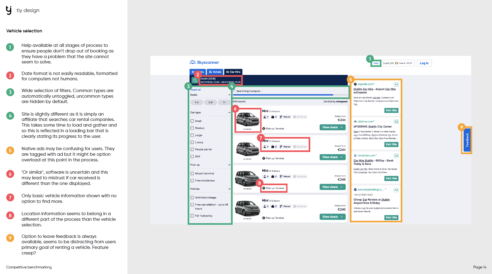

UX DESIGN
Vardo
Car rental desktop website
This site was made as part of a Diploma in UX Design course that I completed with the UX Design Institute. You will see the UX process, from research and analysis to design and iteration.My chosen project was a car rental desktop website.
Research
The first part of the UX process is research. I conducted several pieces of research prior to any design work which you can find detailed below.
Competitor Research
My inital research was to map out how my competitors websites are designed. This was in order to find the users mental model of how a site like this should flow, gain knowledge in the industry, and gain an idea of what is lacking that I can take advantage of.
View Competitor ResearchUsability Tests
Next I conducted a usability test on 2 of my main competitors sites. I performed 3 usability test, lasting approximately an hour each. I had a pre-written set of goals and questions for each particiapant in order to keep the session on track and running smoothly. I asked open ended questions, and prompted the participant when necessary but tried to remain impartial and allow each particiapant to flow through the competitors site on their own journey. I took notes on any insights into the users experience, and performed a brief pre-test interview to find out more about each participants background and context.
View Usability Test Snippet View Usability Test ScriptOnline Survey
I sent out an email to family, friends and colleagues with a typeform in which I set out several open ended questions. This was in order to gather data on what the average person expect, and requires from a car rental website.
View Online Survey ResultsAnalysis
In this phase, I categorized and analyzed my research findings. This allowed me to spot key areas in which I needed to focus my design and allowed me an insight into the users mindset; context, behaviour, and goals.
Affinity Diagram
Placeholder
View Affinity DiagramCustomer Journey Map
Placeholder
View Customer Journey MapDesign
After gaining an insight into what the users goals, context, and behaviour, I used this new found knowledge to begin my design.
Branding
Before beginning to build my site, I spent some time coming up with the name and branding. I decided that my site would specialise in renting campervans and focus on travel and new experiences. I looked up the Romani word for caravan, as they are a culture known for travel and found the name 'Vardo'. After making a basic colour pallete and logo, I was ready to begin building my designs.
User Flow
Placeholder
View User FlowSketches
Placeholder
Results
Completed Mockup
Placeholder
View MockupAnnotations
As part of the handover to developpers it is best practice to send an annotated version of your mockup in which you explain how all interactions should act in detail, including error messages, prompts, and feedback for the user.
View Annotaded MockupTest Results
Final Score: 92%
Certificate of Completion
Placeholder